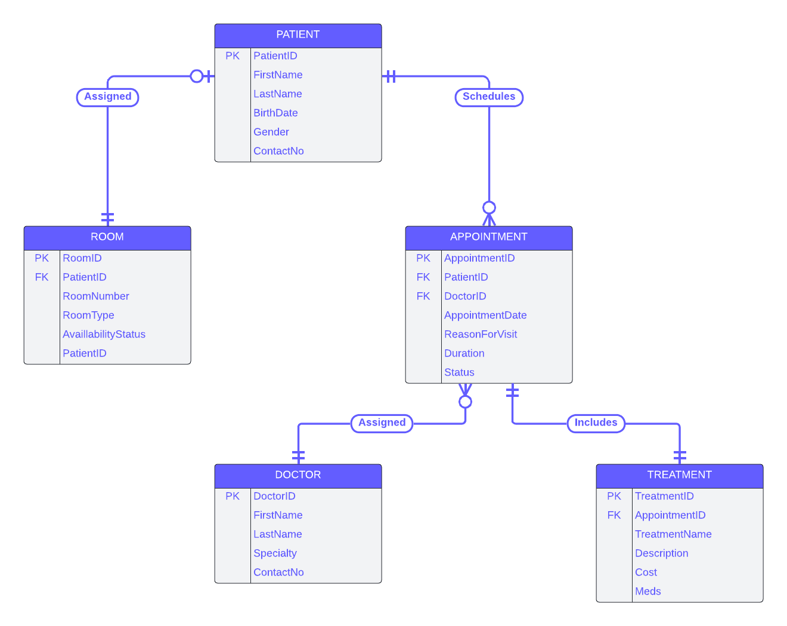
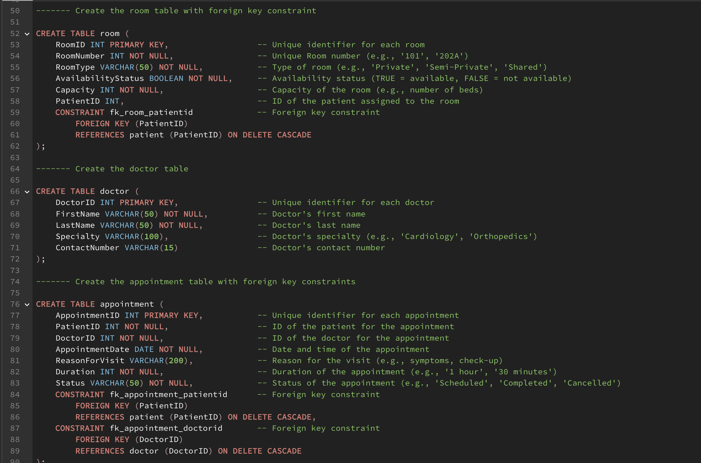
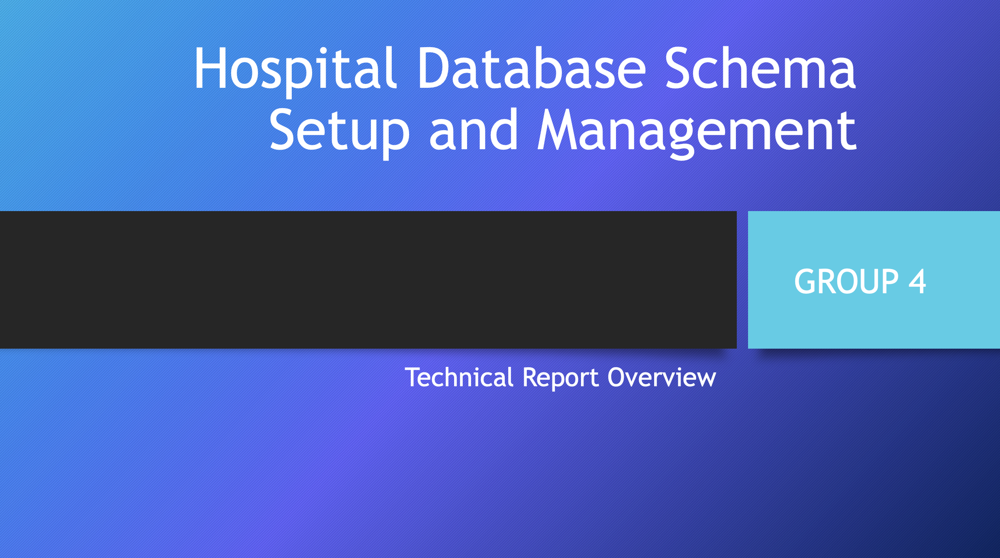

This was the final SQL project for the Database Foundations for Business Analytics class. With an emphasis on DDL/DML frameworks and SQL quering, frequent experimentation was highly encouraged. Guidelines were intentionally ambiguous with little direction given to students for how to build DDL/DML queries for our chosen industry data.

To build our schema represented by the ERD diagram, I coded the DDL and DML files that laid the foundation for our SQL queries. Here you can examine the creation of Tables, Primary Keys, Foreign Keys, Functions, Triggers, Sequences, and Drop statements. In the DML file, you can view all data that was inserted to simulate our Hospital Management System Database. We were also prompted with over 20 varying data requests with increasing difficulty to which we had to construct SQL statements to portray the data asked for.

Here you can find our Final Technical Report that presents a comprehensive approach to designing, implementing, and managing a hospital database schema from start to finish.